Ensemble, donnons du sens à votre patrimoine. Avec nos bureaux à Olivet et à Orléans, nous accompagnons investisseurs privés, entrepreneurs et professions libérales dans la construction, l'optimisation et la transmission de leur patrimoine.
Cadres dirigeants, héritiers, retraités actifs — structurez, faites fructifier et transmettez un patrimoine exigeant.
Découvrir l'accompagnement investisseurs privés →Rémunération, fiscalité professionnelle, prévoyance, cession ou transmission : pilotez votre patrimoine pro et perso.
Découvrir l'accompagnement dirigeants →Trésorerie, épargne salariale, retraite collective, mutuelle et prévoyance : optimisez la stratégie financière et sociale de votre société.
Découvrir l'accompagnement entreprises →Statut d'exercice, fiscalité BNC, retraite des caisses professionnelles, prévoyance, murs du cabinet, transmission de patientèle.
Découvrir l'accompagnement professions libérales →L'intégrité est au cœur de la relation que nous entretenons avec nos clients et nos partenaires. En tant que conseillers indépendants en gestion de patrimoine, nous agissons avec loyauté, probité et confidentialité, dans le strict respect de la déontologie en vigueur dans notre profession.
À toutes les étapes de votre vie, nous vous garantissons un engagement complet, respectueux et bienveillant de vos intérêts patrimoniaux et familiaux. Nous entendons construire avec vous une relation sur le long terme.
Depuis janvier 2022, L&E Conseil Finance Patrimoine est une société à mission. Nous reversons 1% de notre chiffre d'affaires annuel à des associations à but non lucratif, dans les secteurs de la culture, de la santé, de l'éducation et de l'environnement.
Après avoir réalisé un bilan patrimonial et établi vos objectifs, nous déterminons votre profil de risque et vous proposons un ensemble de placements financiers adapté à vos besoins et attentes.
En savoir plus →Nous vous orientons dans l'optimisation et la déclaration de vos impôts (revenu, foncier, fortune immobilière…), afin de profiter des avantages fiscaux disponibles et réduire durablement votre imposition.
En savoir plus →Nous vous accompagnons dans le choix d'une mutuelle santé et d'une prévoyance adaptées à votre profil personnel et professionnel.
En savoir plus →Nous calculons le montant de votre retraite en tenant compte de votre situation patrimoniale et évaluons la stratégie la plus efficace pour en profiter paisiblement.
En savoir plus →Préparez la transmission de votre patrimoine via une reconstitution et des simulations complètes, avec une fiscalité de succession allégée.
En savoir plus →Un accompagnement dédié aux enjeux financiers, fiscaux et successoraux spécifiques aux chefs d'entreprise.
En savoir plus →Structuration, régimes matrimoniaux, clauses bénéficiaires, transmission.
Optimisation de l'impôt sur le revenu, des plus-values et de l'IFI.
Placements en architecture ouverte, allocation sur mesure.
Locatif, SCPI, démembrement, financement.
Nous dressons ensemble un bilan patrimonial poussé, définissons vos objectifs et mettons tout en œuvre pour y répondre. Nous nous engageons ensuite à vous accompagner, vous informer et vous conseiller à toutes les étapes de votre vie.
Notre cabinet n'a aucun lien hiérarchique ou capitalistique avec des réseaux bancaires ou financiers, ce qui nous permet de vous garantir un conseil totalement transparent et objectif, en sélectionnant parmi plus de 150 fournisseurs.
| L&E Conseil Finance Patrimoine |
Banque privée | Plateforme en ligne | |
|---|---|---|---|
| Indépendance (architecture ouverte) | ✓ | Variable | Variable |
| Conseil humain dédié | ✓ | ✓ | ✗ |
| 1ère consultation offerte | ✓ | Variable | ✗ |
| Accompagnement dans la durée | ✓ | Variable | ✗ |
| Expertise dirigeants & professions libérales | ✓ | Variable | ✗ |
| Ingénierie patrimoniale (juridique, fiscal, financier, immobilier) | ✓ | ✓ | ✗ |
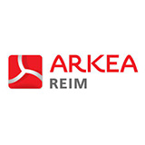
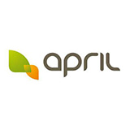
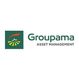
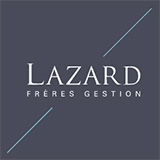
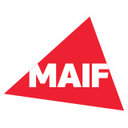
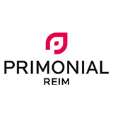
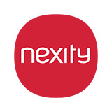
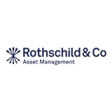
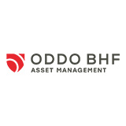
5/5 — 35 avis Google
« Très grand professionnalisme, parfaite maîtrise technique et grandes qualités humaines. Confiance totale. »
« Merci ! Un conseiller vraiment à mon écoute et une solution qui me correspond et qui me permet d'optimiser ma défiscalisation ! »
« Nous remercions M. Boutin pour son écoute, la qualité de ses conseils vis-à-vis de notre projet et la disponibilité dans les échanges. »
« Une bonne écoute et des conseils de qualité. Je recommande. »
« Très bons contacts et conseils, nous sommes ravis de nous lancer avec Guillaume pour gérer notre patrimoine ! »
« Je fais appel aux services de L&E pour la gestion de mon épargne. M. Boutin est disponible, à l'écoute des besoins, avec un suivi régulier. »
Notre profession en gestion de patrimoine et investissement est réglementée et normée : nos agréments sont un gage d'engagement, de déontologie et d'éthique.
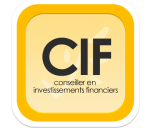
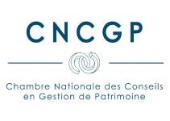
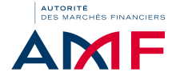
Un conseiller en gestion de patrimoine est un expert qui fournit des conseils personnalisés sur la gestion, l'optimisation et la préservation de votre patrimoine personnel, familial ou d'entreprise. Ses principales responsabilités comprennent l'analyse de votre situation financière globale, la définition de vos objectifs, et la recommandation de stratégies adaptées : planification de la retraite, gestion des investissements, planification successorale, optimisation fiscale, gestion des risques… Il travaille en toute indépendance, sans obligation commerciale envers un établissement bancaire ou financier, et coordonne si besoin son intervention avec vos autres conseils (expert-comptable, notaire, avocat) pour une vision cohérente de votre situation.
Privilégiez un conseiller indépendant, c'est-à-dire sans lien capitalistique avec un établissement bancaire, assurantiel ou financier : cette indépendance lui permet de sélectionner les solutions les plus adaptées à votre situation parmi l'ensemble du marché (on parle d'architecture ouverte), plutôt que de vous orienter vers les produits maison d'un réseau. Vérifiez également qu'il dispose des agréments réglementaires nécessaires (inscription à l'ORIAS, statut de Conseiller en Investissements Financiers) et qu'il est membre d'une association professionnelle reconnue par l'Autorité des Marchés Financiers, comme la CNCGP — des garanties d'un cadre déontologique strict et d'un contrôle régulier de ses pratiques.